Idle, walk, jog, run, sprint on the real pitch, driven by the simulation's own player law. No ball, no dribbling.
ptStep acceleration, braking, lateral and facing limits the playtest
always used. The locomotion reads that state and produces a pose. It never writes position, velocity, facing, ball state or timing,
and it contains no randomness. Animation ON and animation OFF produce bit-identical authoritative traces (gate below).MoveWASD or the arrow keys.
Speed gearshold Q to walk (1.5 m/s desired), hold E to jog (3.0), press nothing to run (5.0), hold Shift to sprint (8.2).
Body1 short 1.70 · 2 average 1.83 · 3 tall 1.96 · 4 short-compact 1.66 · 5 average-lean 1.80 · 6 tall-power 2.00
ViewX Mixed / page · G camera follow · V foot and root markers · H HUD
LoadN 10 extra runners · B 21 extra runners
PlaytestR reset · M pause · , slow motion · . single step · Esc leave
The gears are desired-speed intent, exactly like Shift. They feed the same acceleration limiter; they are not a clamp on the animation. Walking is a walk because the player is actually moving at walking speed.
One continuous parametric cycle, not a clip library. Five parameter sets (idle, walk, jog, run, sprint) are anchored at speeds and blended piecewise-linearly by the authoritative speed, so there is a single pose generator and no blend tree of canned animations.
v / (step x legLen) falls out of the authoritative speed. A tall player takes longer, slower strides at the same speed.| Gait | Anchor speed | Step (x leg length) | Stance fraction | Observed entry | Cycle stride, short 0.803 m | Cycle stride, average 0.865 m | Cycle stride, tall 0.961 m |
|---|---|---|---|---|---|---|---|
| IDLE | 0.0 m/s | 0.30 | 0.80 | below 0.6 m/s | — | — | — |
| WALK | 1.45 m/s | 0.80 | 0.62 | 0.8 m/s | 1.28 | 1.38 | 1.54 |
| JOG | 3.00 m/s | 1.08 | 0.42 | 2.3 m/s | 1.73 | 1.87 | 2.08 |
| RUN | 5.50 m/s | 1.38 | 0.36 | 4.3 m/s | 2.22 | 2.39 | 2.65 |
| SPRINT | 8.20 m/s | 1.66 | 0.30 | 6.9 m/s | 2.67 | 2.87 | 3.19 |
Cycle stride is the configured two-step distance for each body, 2 x step x legLen. It is the design
quantity; the measured column in the next table agrees with it to a few centimetres for walk, jog and run. Entry speeds are where the blend crosses into the next gait, measured in the fixture, and they are symmetric on the way
down. Stance fraction falls with speed, so jog is not a fast walk: it has a flight phase, a shorter stance, higher knee recovery and a
different arm action.
The acceptance measure is ground-relative displacement of a foot while it is in contact. A foot that is releasing is airborne and leaving on purpose, so it is measured separately and reported as the release transient, not as slide.
| Body | H / leg (m) | Gait | Ticks | Slide max | p95 | mean | Penetration | Hover | Pop p95 | Pop max | Stride |
|---|---|---|---|---|---|---|---|---|---|---|---|
| SHORT_LEAN | 1.70 / 0.803 | IDLE | 360 | 1.6 | 0.1 | 0.02 | 0.0 | 4.4 | 3 | 14 | — |
| SHORT_LEAN | 1.70 / 0.803 | WALK | 772 | 0.0 | 0.0 | 0.00 | 2.9 | 0.0 | 8 | 34 | 1.27 |
| SHORT_LEAN | 1.70 / 0.803 | JOG | 345 | 0.0 | 0.0 | 0.00 | 1.6 | 0.0 | 12 | 18 | 1.69 |
| SHORT_LEAN | 1.70 / 0.803 | RUN | 776 | 0.0 | 0.0 | 0.00 | 1.1 | 0.0 | 17 | 35 | 2.10 |
| SHORT_LEAN | 1.70 / 0.803 | SPRINT | 373 | 0.0 | 0.0 | 0.00 | 2.6 | 2.7 | 27 | 33 | 3.73 |
| AVG_ATHLETIC | 1.83 / 0.865 | IDLE | 360 | 1.4 | 0.1 | 0.04 | 0.0 | 4.2 | 4 | 15 | — |
| AVG_ATHLETIC | 1.83 / 0.865 | WALK | 772 | 0.0 | 0.0 | 0.00 | 3.7 | 0.0 | 7 | 25 | 1.36 |
| AVG_ATHLETIC | 1.83 / 0.865 | JOG | 345 | 0.0 | 0.0 | 0.00 | 3.2 | 0.0 | 12 | 21 | 1.82 |
| AVG_ATHLETIC | 1.83 / 0.865 | RUN | 776 | 0.0 | 0.0 | 0.00 | 2.0 | 0.0 | 18 | 44 | 2.27 |
| AVG_ATHLETIC | 1.83 / 0.865 | SPRINT | 373 | 0.0 | 0.0 | 0.00 | 2.9 | 2.8 | 26 | 31 | 3.05 |
| TALL_LEAN | 1.96 / 0.961 | IDLE | 360 | 1.1 | 0.0 | 0.03 | 0.0 | 3.8 | 4 | 17 | — |
| TALL_LEAN | 1.96 / 0.961 | WALK | 772 | 0.0 | 0.0 | 0.00 | 2.6 | 2.8 | 7 | 37 | 1.51 |
| TALL_LEAN | 1.96 / 0.961 | JOG | 345 | 0.0 | 0.0 | 0.00 | 2.8 | 0.0 | 12 | 19 | 2.02 |
| TALL_LEAN | 1.96 / 0.961 | RUN | 776 | 0.0 | 0.0 | 0.00 | 1.9 | 0.0 | 19 | 50 | 2.52 |
| TALL_LEAN | 1.96 / 0.961 | SPRINT | 373 | 0.0 | 0.0 | 0.00 | 3.2 | 3.0 | 31 | 44 | 4.23 |
All values in centimetres. Slide is the planted foot's ground-relative displacement. Pop is the per-tick change in a joint's per-tick displacement, which separates a genuine discontinuity from a fast but smooth swing foot; at sprint the swing foot legitimately covers more than half a metre per tick, so the first difference alone is not a defect measure. Stride is the measured distance between consecutive same-foot plants.
Result: planted-foot slide is 0.0 cm at p95 and 0.0 cm mean for walk, jog, run and sprint on all three bodies. The only non-zero maximum is 1.4 cm, during a standing turn, where the feet deliberately step to new stance points.
The same numbers taken from the browser harness itself, driving the real page with scripted key intent at 60 Hz. The first 30 ticks of each clip are the harness's own spawn settle, not locomotion: the player stands at rest while the facing swings a long way toward the parked ball, and the stance feet are dragged up to 2.3 cm before the angular replant steps them. Those ticks are excluded here and called out under limitations.
| Case | Clip | Ticks | Peak speed | Slide max | p95 | mean | Pop p95 | Page errors |
|---|---|---|---|---|---|---|---|---|
| WALK | walk | 201 | 1.50 | 0.4 | 0.0 | 0.00 | 23 | 0 |
| JOG | jog | 201 | 3.00 | 0.0 | 0.0 | 0.00 | 27 | 0 |
| RUN | run | 201 | 5.00 | 0.0 | 0.0 | 0.00 | 23 | 0 |
| SPRINT | sprint | 261 | 8.20 | 0.0 | 0.0 | 0.00 | 29 | 0 |
| ACCELERATION | accel | 181 | 8.20 | 0.1 | 0.1 | 0.00 | 31 | 0 |
| DECELERATION and STOP | stop | 261 | 8.20 | 0.9 | 0.5 | 0.08 | 29 | 0 |
| WALK to JOG | w2j | 211 | 3.00 | 0.4 | 0.0 | 0.00 | 17 | 0 |
| JOG to RUN | j2r | 231 | 5.00 | 0.1 | 0.0 | 0.00 | 23 | 0 |
| RUN to SPRINT | r2s | 231 | 8.20 | 0.0 | 0.0 | 0.00 | 27 | 0 |
| GRADUAL TURN | turn_grad | 261 | 5.00 | 0.0 | 0.0 | 0.00 | 26 | 0 |
| SHARP CHANGE OF DIRECTION | turn_sharp | 251 | 5.00 | 1.8 | 0.0 | 0.03 | 38 | 0 |
| STANDING TURN | idle_turn | 301 | 0.00 | 1.5 | 0.1 | 0.05 | 6 | 0 |
| WALK | walk_short | 201 | 1.50 | 0.2 | 0.0 | 0.00 | 12 | 0 |
| WALK | walk_tall | 201 | 1.50 | 0.0 | 0.0 | 0.00 | 13 | 0 |
| RUN | run_short | 201 | 5.00 | 0.0 | 0.0 | 0.00 | 19 | 0 |
| RUN | run_tall | 201 | 5.00 | 0.0 | 0.0 | 0.00 | 27 | 0 |
| RUN | run_game | 201 | 5.00 | 0.1 | 0.0 | 0.00 | 23 | 0 |
| SPRINT | sprint_game | 261 | 8.20 | 0.1 | 0.0 | 0.00 | 29 | 0 |
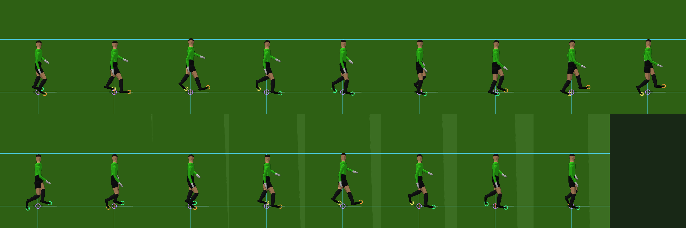
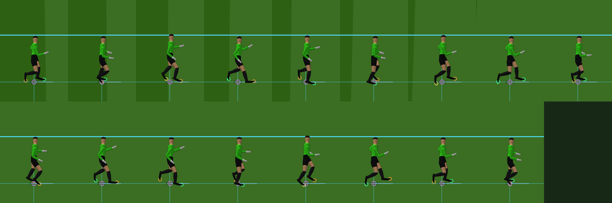
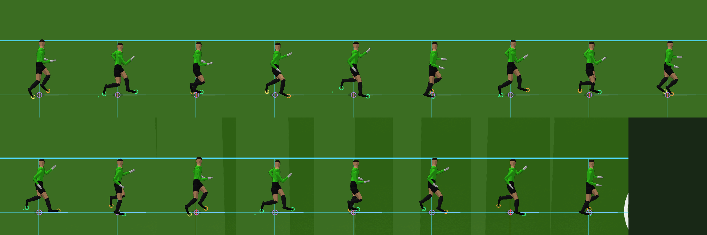
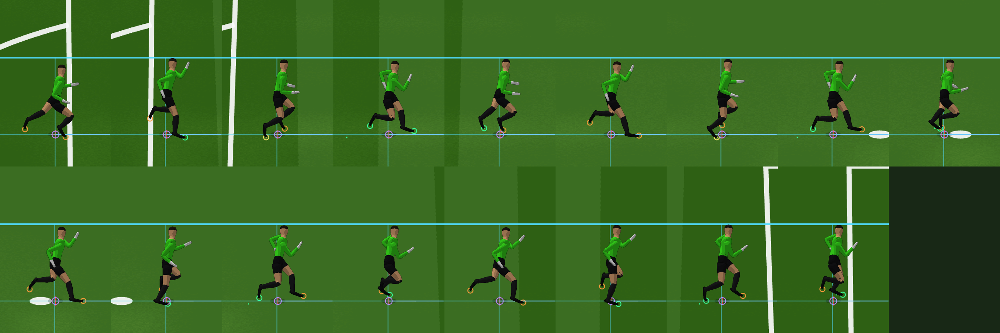
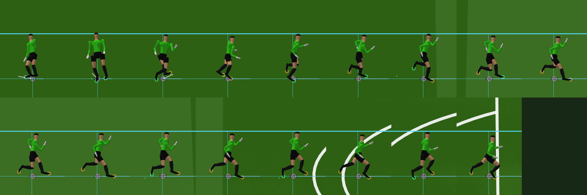
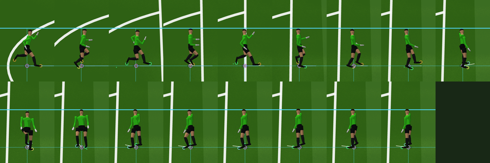
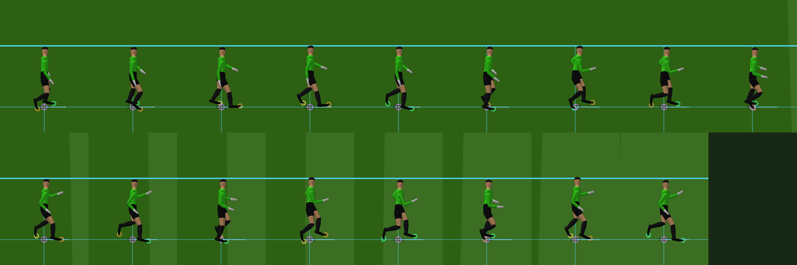
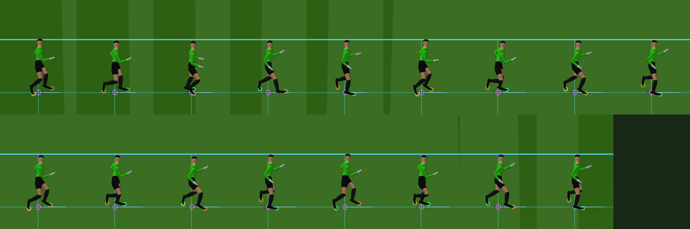
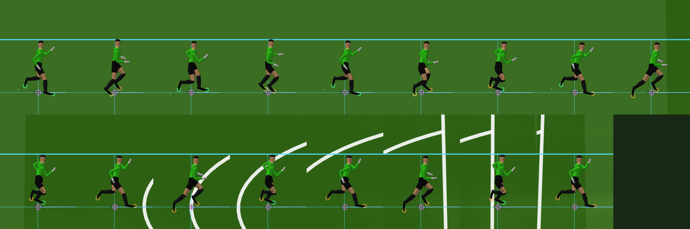
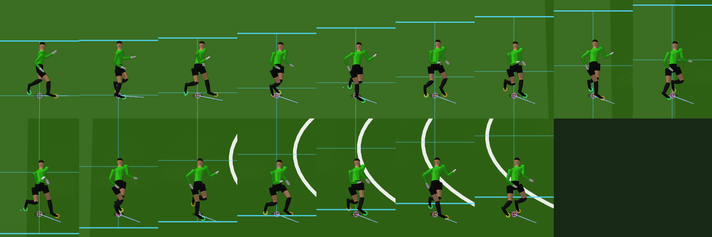
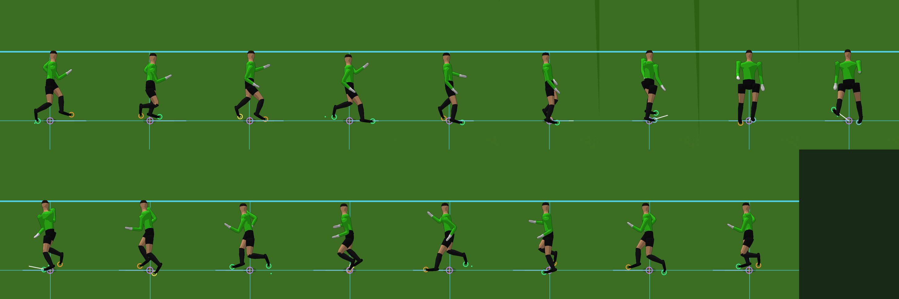
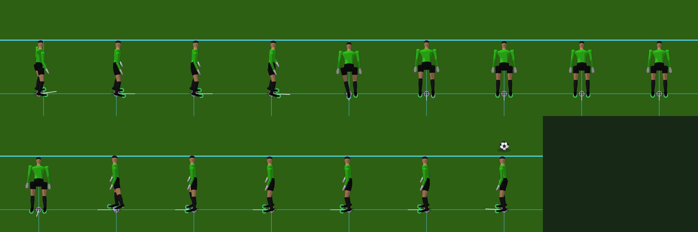
The same system, the same parameters, driven only by the skeleton's leg length. No identity or rating keying anywhere.
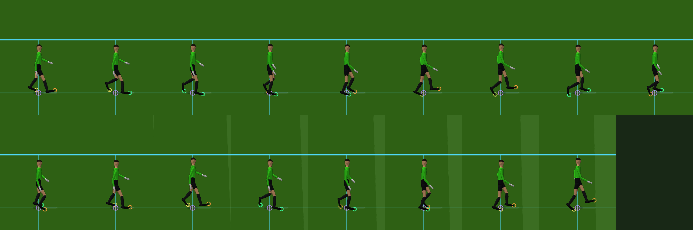
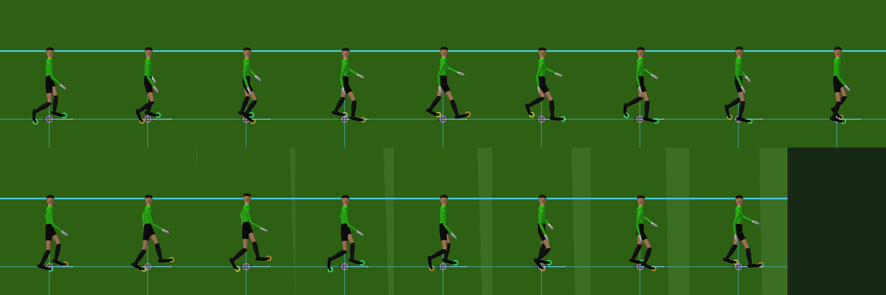
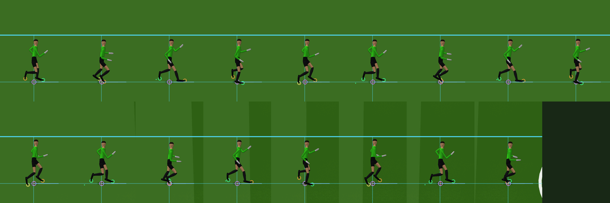
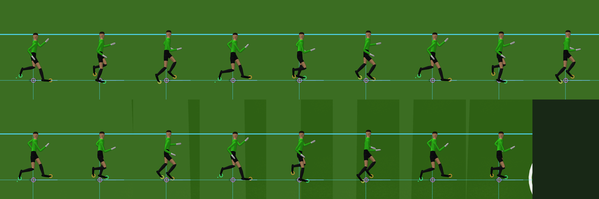
The actual Touchline camera and Mixed presentation, at the distance the game is played from.
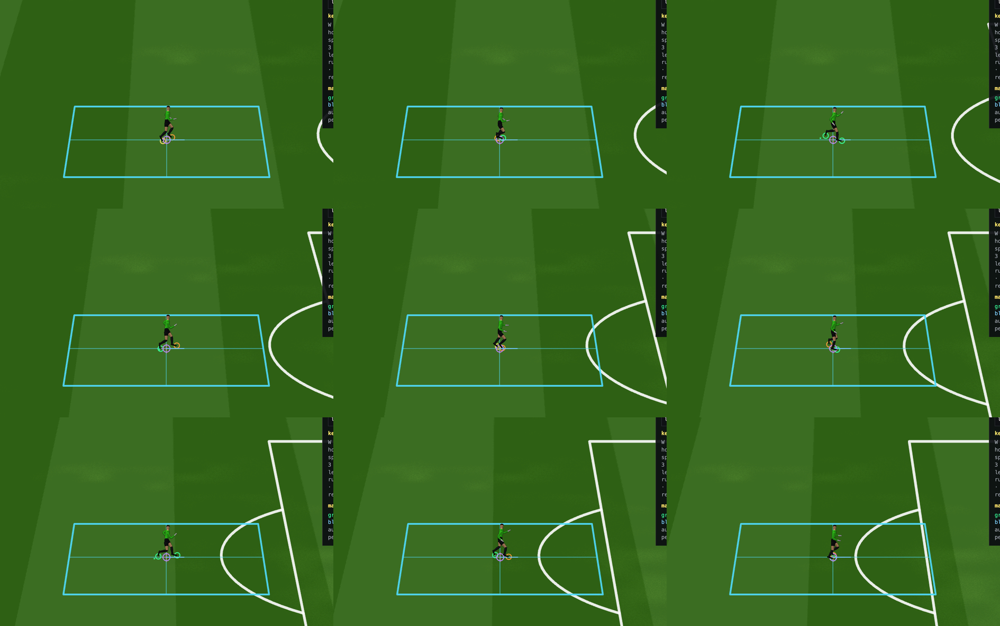
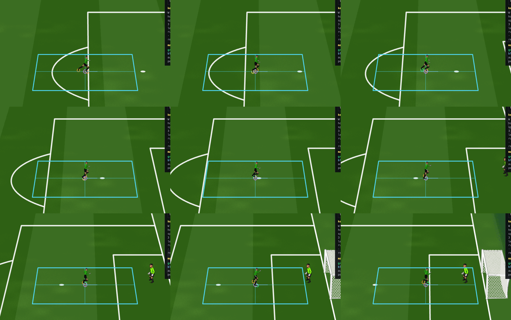
Measured separately in the harness HUD and by the scaling probe: simulation step, animation and IK solve, skinning, character rendering, and compositing. The presentation stays capped at 60 fps and no GL buffer or canvas is recreated per frame: the character render target is grow-only and reused, and the region-of-interest pass reuses the same framebuffer across frames.
| Rigs | Simulation | Animation + IK | per rig | Skinning | Character render | Compositing | Draw calls | Layer |
|---|---|---|---|---|---|---|---|---|
| 1 | 0.07 | 0.20 | 0.25 | 0.40 | 0.247 | 0.03 | 0.10 | 25.6 | 28.1 | 6.59 | 8.40 | 1 | 3000x1900 |
| 11 | 0.05 | 0.10 | 1.28 | 1.90 | 0.117 | 0.04 | 0.10 | 24.4 | 26.5 | 6.88 | 8.10 | 11 | 3000x1900 |
| 22 | 0.04 | 0.10 | 2.74 | 3.70 | 0.125 | 0.07 | 0.20 | 23.8 | 28.8 | 8.09 | 9.40 | 22 | 3000x1900 |
Milliseconds per 60 Hz frame, mean | p95, measured by the harness's own timers. The 60 fps frame budget is 16.7 ms.
Gate: sandbox/visual/tools/anim3d/of_loco_regress.js, 720 ticks covering every gait, both turns, acceleration and a stop.
Math.random, Date.now or performance.now anywhere in the pose path.
The harness calls performance.now only to fill its own timing panel.